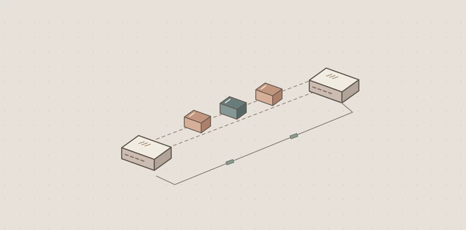

字节在控制帧里的位置
自动定容程序作为 TCP 客户端，接收上位机发来的命令。每帧 15 字节。第一个是 0xAA，第二个是命令字，接下来依次是瓶高、刻度高度、目标容量，均为大端序的 32 位浮点数。最后一个字节是 0x55。
这个布局只用于接收命令。设备发回上位机的状态包另有格式，查看通信日志时要先标清收发方向，否则同一个偏移可能会被当成另一个字段。
第一次只读到七个字节
TCP 按顺序交付字节，接收次数与发送次数可以不同。上位机连续发来两帧，接收端先读到 7 字节，下一次再读到 23 字节。先把 7 字节留在缓冲区，第二次追加后刚好 30 字节，两帧都可以解析。
仓库里的 ControlReader 每次最多读 64 字节，追加到缓冲区后寻找帧头。从帧头算起还不足 15 字节，就把这段留下。凑齐后检查固定位置的帧尾，再解码字段、交给业务层。帧尾对不上时，放弃这个候选帧头，继续寻找下一个。
换一种切分再读一遍
准备两帧不同的命令，把同一串字节按 15＋15、7＋23、一次 30 字节三种方式送进解析器。三次都应得到两条命令，次序和数值完全一样。再只送一帧的前 14 字节，最后一个字节到来前，业务层应当一次也没收到回调。
如果命令数和顺序都对，瓶高却异常，就选个熟悉的数查字节序。IEEE 754 单精度的 1.0 写成大端序是 3F 80 00 00。对照发送端记录的四个字节与接收端解码的数值，就能检查这一层。